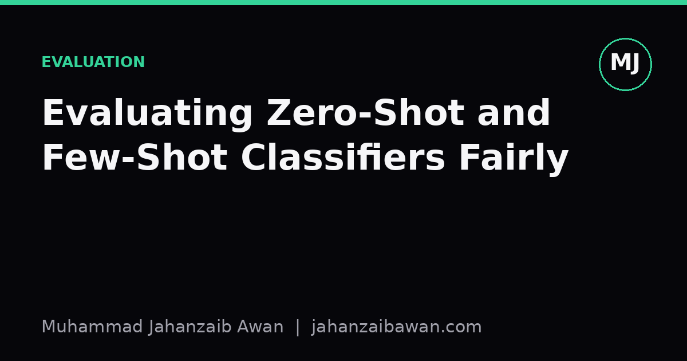

Evaluating Zero-Shot and Few-Shot Classifiers Fairly
Comparing prompted classifiers against a fine-tuned baseline only means something if the data splits, label sets, and metrics are matched. Here is how I think about doing that properly.

Why this comparison keeps going wrong
Every few months someone publishes a result where a zero-shot prompted model edges out a fine-tuned classifier on some benchmark, and the conclusion drawn is that fine-tuning is dead. I am sceptical of most of these claims, not because prompting is weak, but because the comparisons are rarely apples to apples. Zero-shot and few-shot setups and fine-tuned baselines differ in so many ways beyond the headline method that the single accuracy number at the end tells you almost nothing about which approach is actually better suited to your problem.
The core issue is that a fine-tuned model and a prompted model are exposed to different information, scored under different implicit rules, and often evaluated on test sets that were not built with either method in mind. If the fine-tuned baseline was trained on a narrow label distribution while the prompted model was given a richer natural-language description of the task, you are not comparing architectures, you are comparing how much task knowledge each model was handed. That is a fair thing to study, but it is a different question from which model classifies better given equal information.
This matters practically because teams make real decisions off these comparisons: whether to invest in labelling data, whether to fine-tune a small model or call an API, whether a few-shot prompt is good enough for production. Getting the comparison wrong means making the wrong call, often an expensive one.
The leakage trap that favours prompted models
The most common failure I see is label leakage through the label names themselves. Suppose you are building a sentiment classifier with three classes: positive, negative, and neutral. Your fine-tuned baseline is trained on examples labelled with integers, 0, 1, 2, mapped internally. Your zero-shot classifier is given the literal strings 'positive', 'negative', 'neutral' as candidate labels in the prompt. The zero-shot model is not doing zero-shot classification in any meaningful sense here; it is doing lexical matching against class names that already encode the answer. If the test set texts contain words like 'great' or 'terrible' that correlate strongly with the label name, the prompted model gets a free pass that the fine-tuned model never had access to in such an explicit form.
A concrete worked example makes this sharper. Imagine a 1,000-example test set where 400 texts contain an adjective from the set {great, excellent, wonderful} and all 400 are labelled positive. A zero-shot model matching 'positive' against those adjectives could get those 400 right almost by construction, lifting its headline accuracy to, say, 78 percent, while a fine-tuned model that was trained on a different, more balanced split might sit at 74 percent. The six point gap looks like a loss for fine-tuning, but it is really a measurement artefact: the prompted model benefited from label strings that happened to overlap with surface features of the text, something a well-designed fine-tuning label scheme would try to avoid depending on.
The fix is not complicated but it is often skipped. Use label names for the prompted model that are equally uninformative as the fine-tuned model's label encoding, or better, test both models against label sets phrased in multiple equivalent ways and report the range. If performance swings by ten points depending on whether you call a class 'positive' or 'class A', you have learned something important about the prompted model's reliance on surface cues, and that insight is worth more than a single leaderboard number.

Matching data splits, shot counts, and metrics
A second source of unfairness is the test split itself. Fine-tuned baselines are usually evaluated on a held-out split that was carved from the same distribution as training data, often by a dataset's original curators who controlled for duplicate near-matches between train and test. Few-shot prompted models, by contrast, are frequently evaluated on whatever test set is lying around, sometimes the same one the fine-tuned model used, which sounds fair until you notice that the few examples chosen for the prompt were cherry-picked from the training set by a human who glanced at the test distribution first. That is leakage through the back door: the few-shot demonstrations were selected with implicit knowledge of what the test set looks like.
To keep this honest, the few-shot exemplars should be drawn from the same training pool the fine-tuned model used, with no visibility into the test set during selection, and ideally with multiple random draws of exemplars averaged together rather than reporting the single best run. If five-shot accuracy varies between 61 and 73 percent depending on which five examples were sampled, reporting only the 73 percent run as 'few-shot performance' is misleading; the honest number is the mean across several draws plus the spread, because in production you do not get to pick the lucky seed.
Metrics need matching too. Macro-F1 and accuracy tell very different stories on imbalanced classes, and prompted classifiers often default to a mode-seeking behaviour that inflates accuracy on the majority class while quietly failing the minority ones. If your fine-tuned baseline reports macro-F1 because the original authors knew the classes were imbalanced, the prompted model must be scored the same way, on the same class boundaries, with the same handling of ties or refusals to answer. A prompted model that declines to answer on 5 percent of examples and simply drops those from the denominator will look better than a fine-tuned model forced to output a label for every input; decide upfront how abstentions count and apply that rule uniformly.
A practical checklist for the comparison
Before trusting any result that says prompting beats fine-tuning, or vice versa, I run through a short list: are the label names equally informative or equally obfuscated for both methods; were few-shot exemplars selected without peeking at test data, and averaged over multiple random seeds; is the test split identical in content and size for both models; and is the scoring metric, including how abstentions and ties are handled, applied the same way to both outputs. If any of these differ, the comparison is measuring something other than the thing being claimed.
None of this means fine-tuning always wins, or that prompting is a trick. Plenty of genuine, carefully controlled studies find real and repeatable advantages for prompted approaches on certain task types, particularly where labelled data is scarce or label definitions shift often. The point is that the advantage has to survive a fair test before you believe it. Build the comparison the way you would build any other experiment: control the variables you are not trying to measure, report variance rather than a single lucky number, and be explicit about every piece of information each model had access to. That discipline is what turns an interesting demo into evidence you can actually act on.